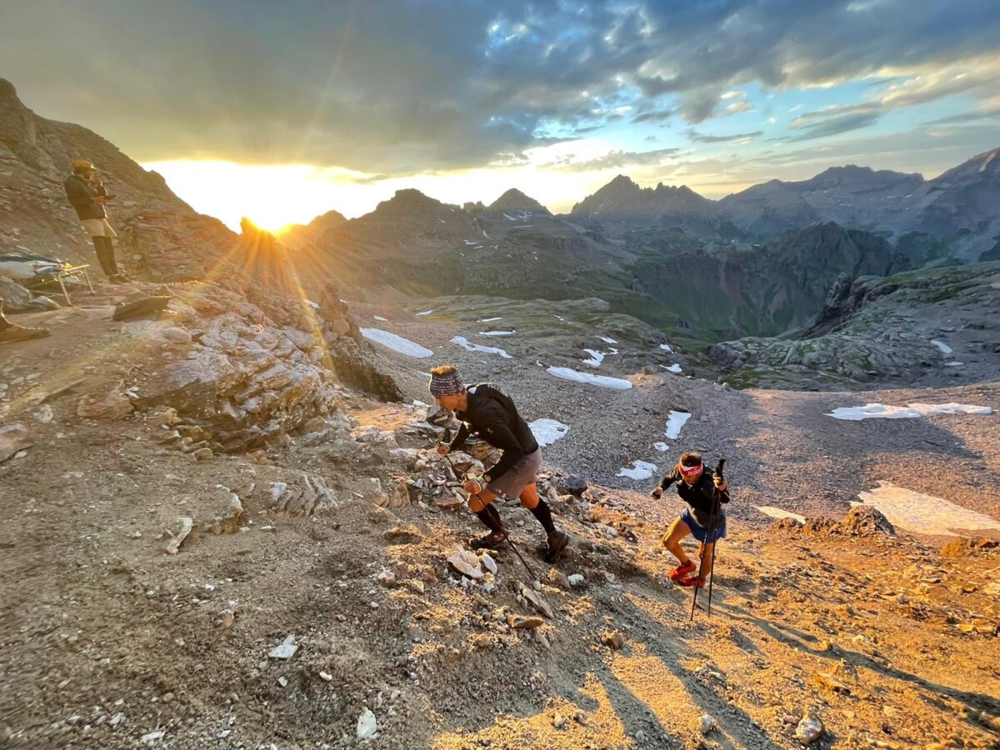
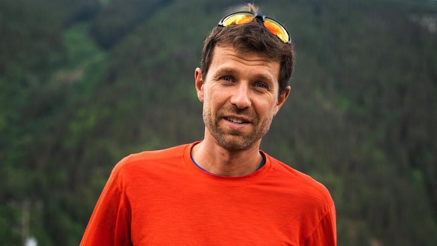
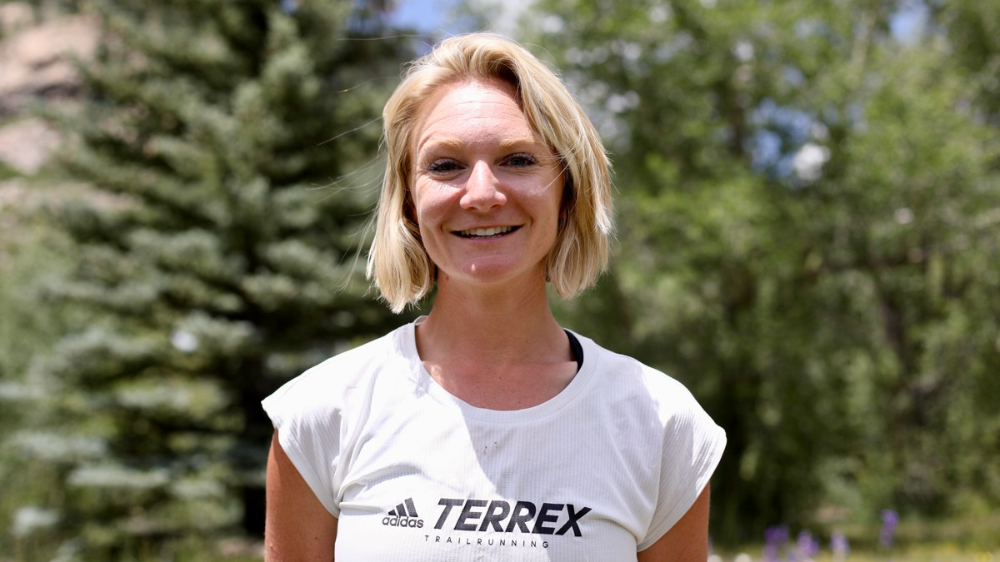

After two successive cancellations (one due to snowfall and one to COVID), the Hardrock 100 took place in Colorado’s San Juan mountains on Friday, and it was worth the wait.
French ultratrail superstar and three-time UTMB winner François D’haene was strong from the start, and powered through to a 21:45:51 finish early Saturday – the fastest time anyone has run the course, counterclockwise or overall (both records were held by Kilian Jornet, who did not run this year). Defending champion Sabrina Stanley of Silverton, Colo. (where the looped-course race starts and finishes) won the women’s race in 27:21:48 – the second fastest women’s finish ever, and her second time racing Hardrock.
RELATED: Finishers' list and times
François D’haene: broke the course record by finishing the race for 21:45:51
Sabrina Stanley: won the women’s race in 27:21:48, sixth finisher overall
